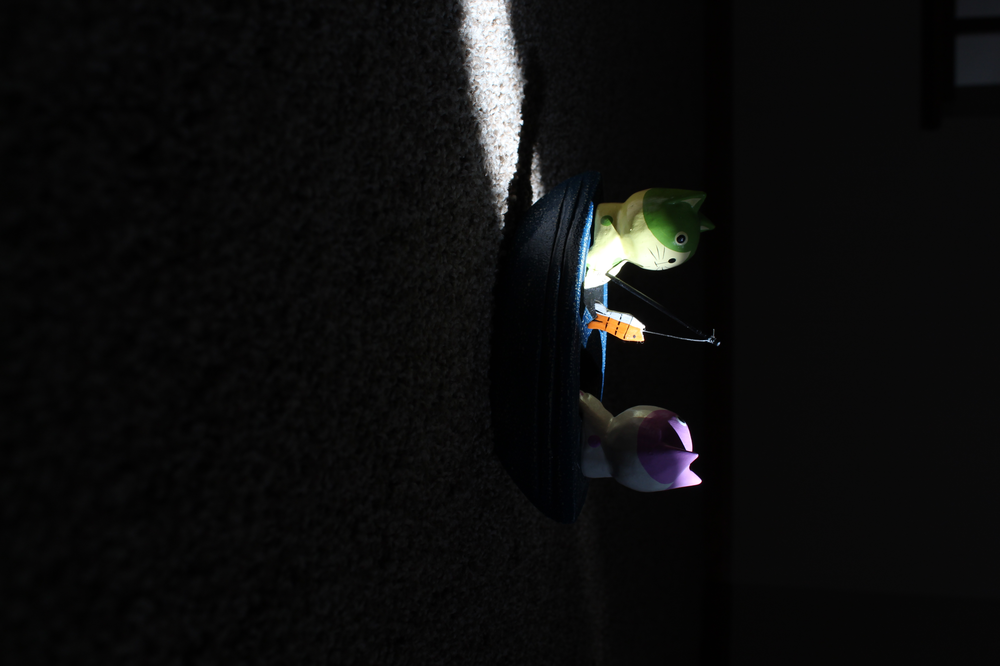

Module 2 Assignment: Depth of Field
A goosefoot flowering plant grows in front of a blurred background of Shop Creek at Cherry Creek State Park in Aurora, Colorado. This digital photo was taken as an assignment studying aperture in a digital photography course at Colorado State University. Photo by Sofia Maines.
This picture used an aperture setting of f/5 a shutter speed of 1/320 seconds, and an ISO of 100

The same goosefoot plant grows, now with a more clear background and depiction of Shop Creek at Cherry Creek State Park in Aurora, Colorado. This digital photo was taken as an assignment studying aperture in a digital photography course at Colorado State University. Photo by Sofia Maines.
This picture used an aperture setting of f/32 a shutter speed of 1/80 seconds, and an ISO of 1250
Module 3 Assignment: Creative Shutter Speed

Catie Miller, a student at Savannah College of Art and Design, is captured still in the middle of running at the Riverwalk in Savannah, Georgia. This digital photo was taken as an assignment studying shutter speed in a digital photography course at Colorado State University. Photo by Sofia Maines.
This picture used an aperture setting of f/4.5 a shutter speed of 1/4000 seconds, and an ISO of 400

Catie Miller is now demonstrating a photograph that captures this same movement but blurred. This digital photo was taken as an assignment studying shutter speed in a digital photography course at Colorado State University.Photo by Sofia Maines.
This picture used an aperture setting of f/29 a shutter speed of 1/8 seconds, and an ISO of 100
Module 4 Assignment: Manual Exposure

-2 - 25mm lens focal length, f/8 aperture, 1/125 shutter speed, and 200 ISO

Correct - 25mm lens focal length, f/8 aperture, 1/30 shutter speed, and 200 ISO

+2 - 25mm lens focal length, f/8 aperture, 1/8 shutter speed, and 200 ISO
A small wooden sculpture of two cats fishing in a boat in an empty room, captured on June 19th. This series of photographs demonstrates a study on exposure settings, showcasing properly exposed, underexposed, and overexposed images. Photo by Sofia Maines.
© 2025, Sofia Maines. All Rights Reserved.